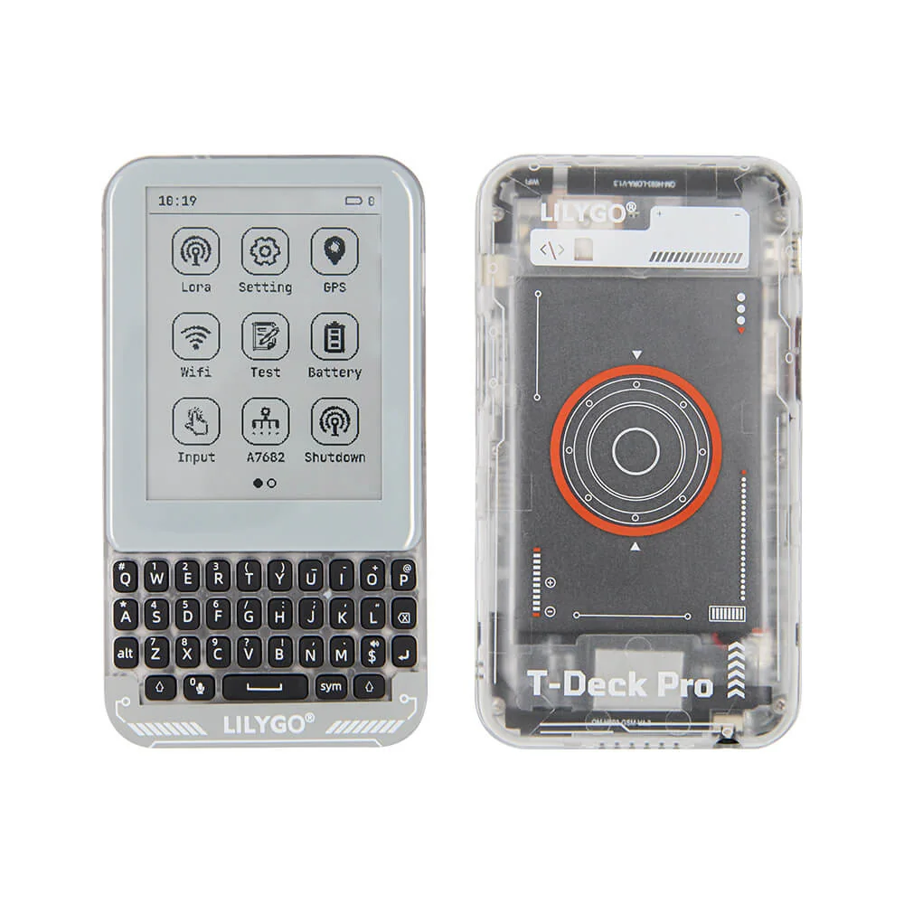

T-Deck Pro
LilyGO · LilyGO T-Deck Pro – ESP32-S3 3.1" e-paper keyboard device, LoRa + GPS (+4G option)
T-Deck Pro is a 3.1" 320x240 E-paper ESP32 display board by LilyGO based on the ESP32-S3 with 16MB flash, 8MB PSRAM.
Features, ports & interfaces
- E-paper display (GDEQ031T10)
- 8 MB PSRAM
- 16 MB flash
- microSD (TF) card slot
- Wi-Fi 4 (802.11 b/g/n, 2.4 GHz) – version from the ESP32-S3 datasheet
- Bluetooth 5 (LE) – version from the ESP32-S3 datasheet
- LoRa: SX1262
- GNSS / GPS: GPS
- Speaker
- Microphone
- Battery: 1400 mAh (built-in)
Specifications
| Parameter | Value | Source |
|---|---|---|
| Screen size | 3.1" | source |
| Resolution | 320x240 | source |
| Panel | E-paper | source |
| Shape | Rectangular | |
| Display driver | GDEQ031T10 | source |
| MCU / SoC | ESP32-S3FN16R8 (dual-core LX7) | source |
| MCU family | ESP32-S3 | source |
| Flash | 16MB | source |
| PSRAM | 8MB | source |
| Wi-Fi | 2.4 GHz Wi-Fi | source |
| Bluetooth | Bluetooth 5 (LE) | source |
| Category | LilyGO (T-series) | |
| Battery | 1400 mAh (built-in) | source |
| Connectivity | Option: A7682E 4G modem or PCM5102A audio DAC | source |
| E-paper | GDEQ031T10 | source |
| GNSS / GPS | GPS | source |
| LoRa | SX1262 | source |
| Microphone | Microphone | source |
| SD / TF | TF card | source |
| Speaker interface | Speaker | source |
| Vendor | LilyGO |